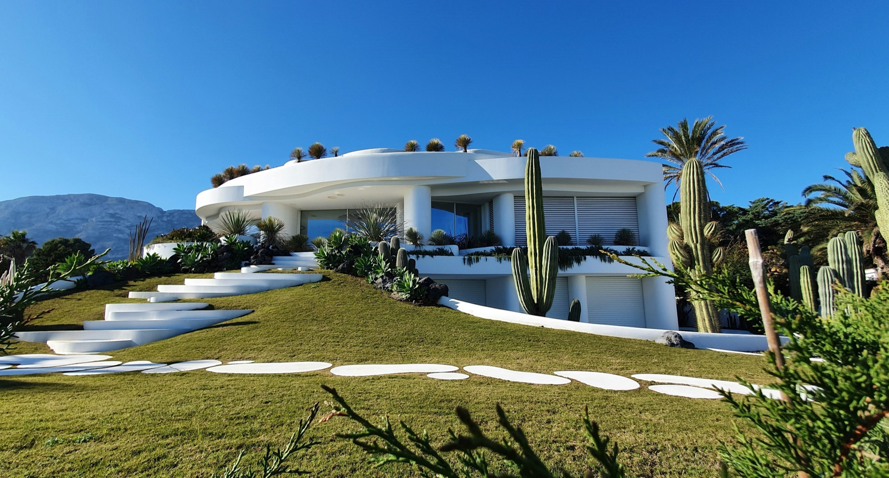

Progettazione paesaggistica su misura
Diamo forma a giardini, terrazzi e spazi esterni residenziali o aziendali. Ogni progetto nasce da un’idea, prende forma con materiali di pregio e si realizza con precisione artigianale.
Linee, volumi e natura: il tuo spazio verde come non l’hai mai immaginato.
